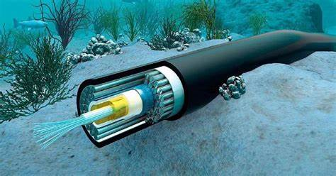

Antecedentes históricos (ARPANET y sus orígenes militares)

El origen del Internet se remonta a finales de los años 60, cuando el Departamento de Defensa de Estados Unidos creó ARPANET, una red de computadoras diseñada para mantener la comunicación entre distintas bases militares y centros de investigación, incluso en caso de guerra. Esta red fue pionera en el uso del protocolo de conmutación de paquetes, base fundamental de lo que hoy conocemos como Internet
EEvolución del uso de militar y académico a civil y comercial
Durante los años 70 y 80, ARPANET fue adoptada por universidades e instituciones académicas para compartir información entre investigadores. A finales de los 80 e inicios de los 90, el acceso comenzó a abrirse al público y a empresas privadas, marcando el comienzo del uso comercial del Internet

El nacimiento del World Wide Web
En 1989, el científico británico Tim Berners-Lee desarrolló la World Wide Web (WWW), un sistema que permitía navegar entre documentos a través de hipervínculos. Esta innovación introdujo los sitios web, el uso de navegadores y el lenguaje HTML, transformando el Internet en una herramienta accesible y visual para todo tipo de usuarios
Etapas del Internet

Expansión global de Internet
A partir de los años 2000, el acceso a Internet creció exponencialmente en todo el mundo. La instalación de cables submarinos, el desarrollo de redes móviles y la aparición de servicios inalámbricos permitió que millones de personas se conectaran, incluso en regiones alejadas
Impacto social y cultural
El Internet ha cambiado radicalmente la forma en que nos comunicamos, trabajamos, aprendemos y consumimos contenido. Ha permitido el desarrollo del comercio digital, la educación en línea, el activismo social, y ha creado nuevas formas de cultura digital como los memes, los influencers o los videojuegos en línea